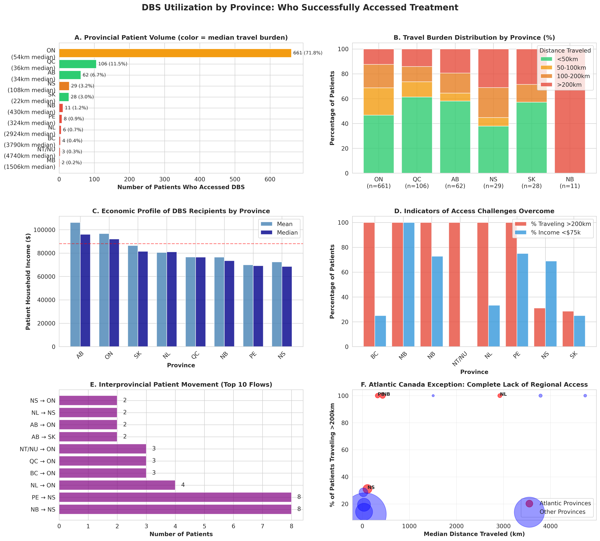

6-Panel Provincial Utilization Summary - Comprehensive overview of DBS access across Canada based on 920 verified patient records. Shows provincial patient volumes, travel burden distribution, economic profiles, access challenges, interprovincial flows, and Atlantic Canada crisis.
